Lennart
Veganer Reibeschmelz, Babyspinat, rote Zwiebeln, Kirschtomaten, Mais
12,90 €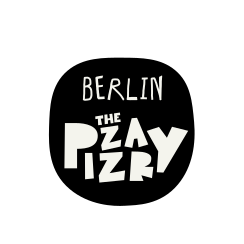
Franchise Paket Gespräch anfragen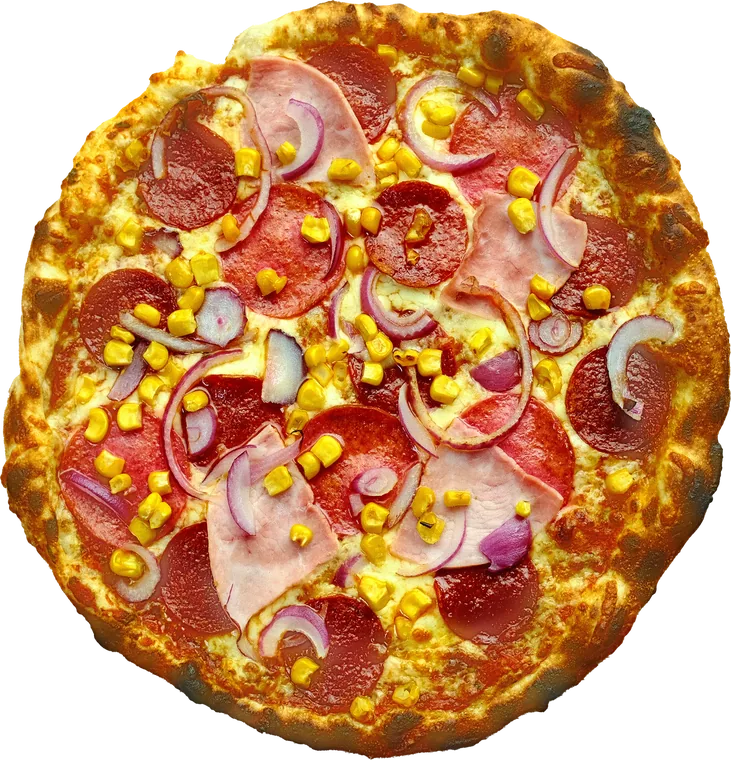
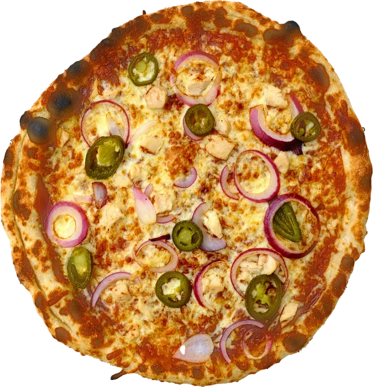
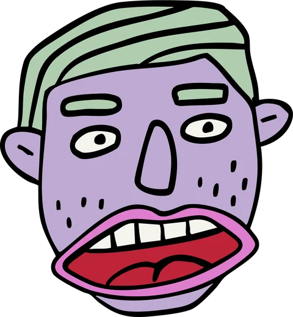
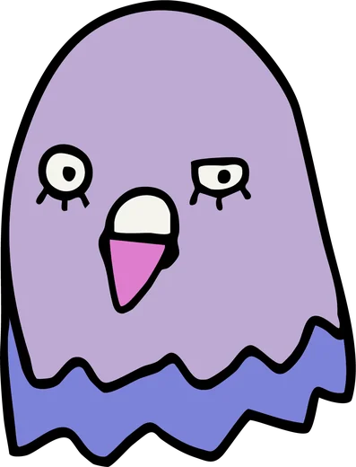
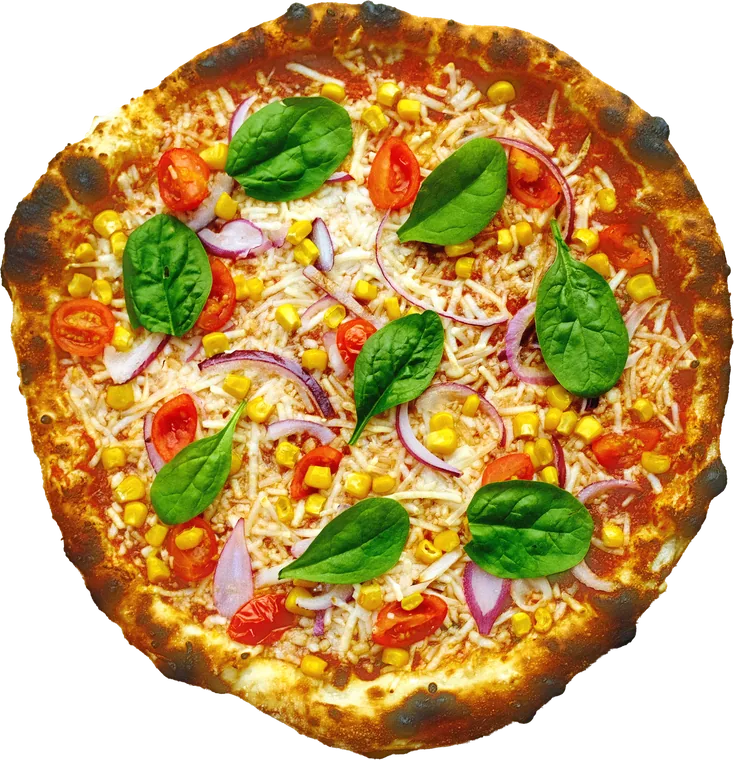
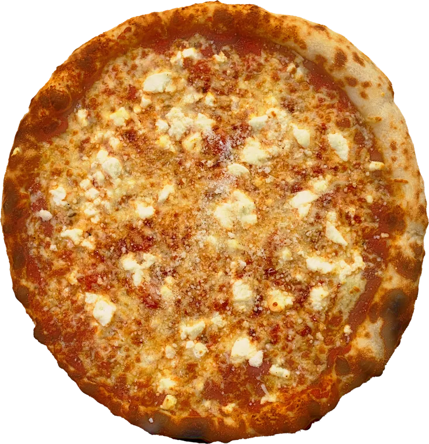
Franchise Paket · Entwurf von Social Bites · Stand 23.10.2026
Seit dem 28.08.2026 läuft der erste Laden in der Zimmerstraße 91, Berlin Mitte. Das Ziel: zehn eigene Läden, danach Partner im DACH Raum. Hier siehst du, was das System dafür schon kann und was noch fehlt.
Zeig mir alles Zahlen und AngebotEchte Marke, echter Laden
Keine Pizza sieht aus wie die andere. Kein Berliner ist wie der andere. Wir erfinden hier nichts neu. Logo, Taube, Farben, Charaktere, Karte und Fotos gibt es schon. Wir bauen daraus ein Franchise System, das ein Team an einem anderen Ort verstehen, aufbauen und genauso führen kann.
01 · Marke und Taube
Die Taube ist das Spirit Animal von The Pizzary. Sie bricht mit Italien Klischees und steht für den echten, ungeschönten Charakter der Stadt. Das Logo bleibt immer einfarbig: schwarz auf hell, weiß auf dunkel. Laut, lebendig, eigenwillig, kantig wie frisch aus dem Teig geschnitten.
Schriften: Ariana Pro (Hausschrift, Lizenz gekauft, hier Ersatz Avenir Next), Bright Dreams für Störer, Bisko für Notizen. Berlin asphalt und Cheesy dark sind im Handbuch fehlerhaft angegeben und noch beim Kunden zu bestätigen.
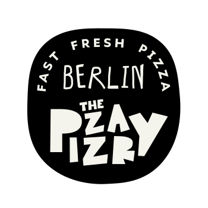
Die Charaktere
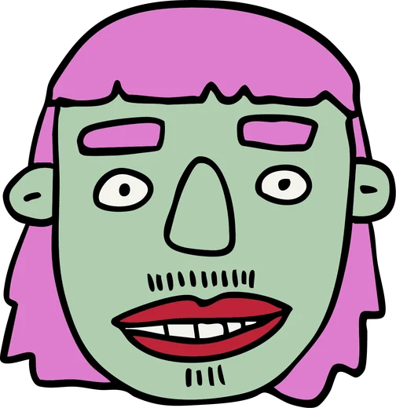
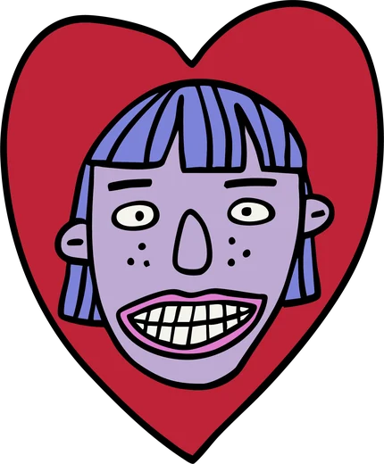
Lennart und Steve haben noch keinen Kopf in den Kundendateien. Die Originale fordern wir beim Kunden an.
Wiederholbar
Der Berliner Laden ist die Vorlage. Für weitere Standorte wechselt der Stadtname im Siegel, bei Bedarf auch das Tier. Die drei Siegel rechts sind Entwürfe von uns. Das echte Krafttier je Stadt zeichnet die Konzeptwerkstatt im Auftrag des CEO.
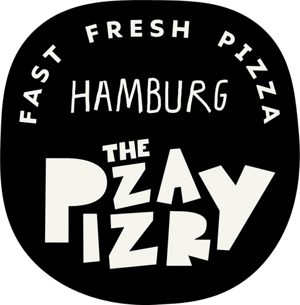
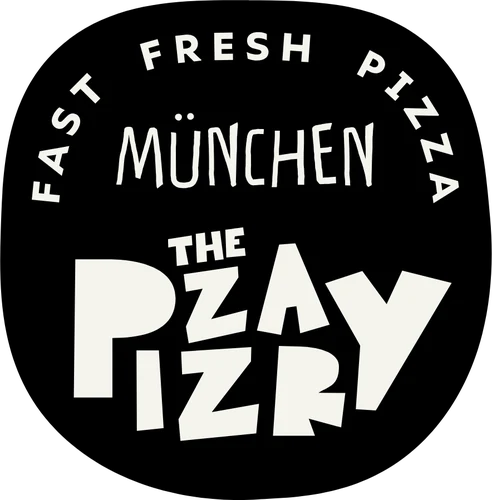
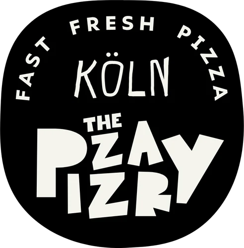
02 · Produkt
Alle Pizzen mit Tomatensoße, Yuki mit BBQ Soße. New York Style und ca. 180 Sekunden Backzeit nennt die Marke selbst, den Ofentyp reicht der Kunde nach. Preise der One Six Karte vom 19.10.2026.
Veganer Reibeschmelz, Babyspinat, rote Zwiebeln, Kirschtomaten, Mais
12,90 €BBQ-Soße, Mozzarella, gegrilltes Hähnchen, rote Zwiebeln, Jalapeños
12,90 €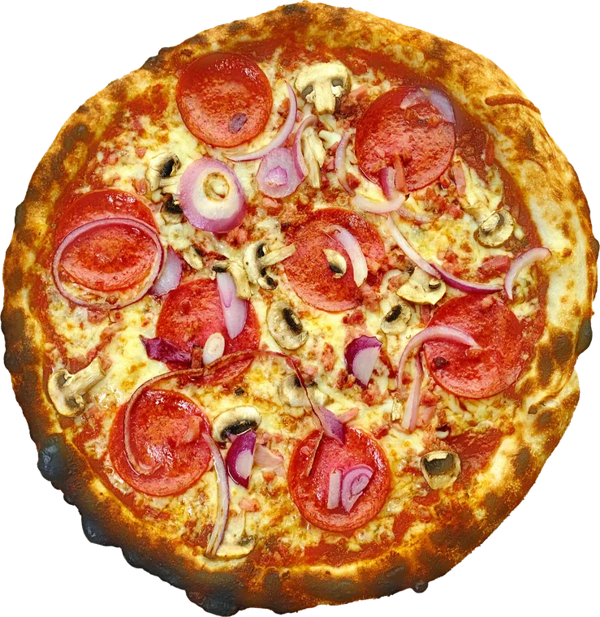
Mozzarella, Salami, Speck, rote Zwiebeln, Champignons
13,90 €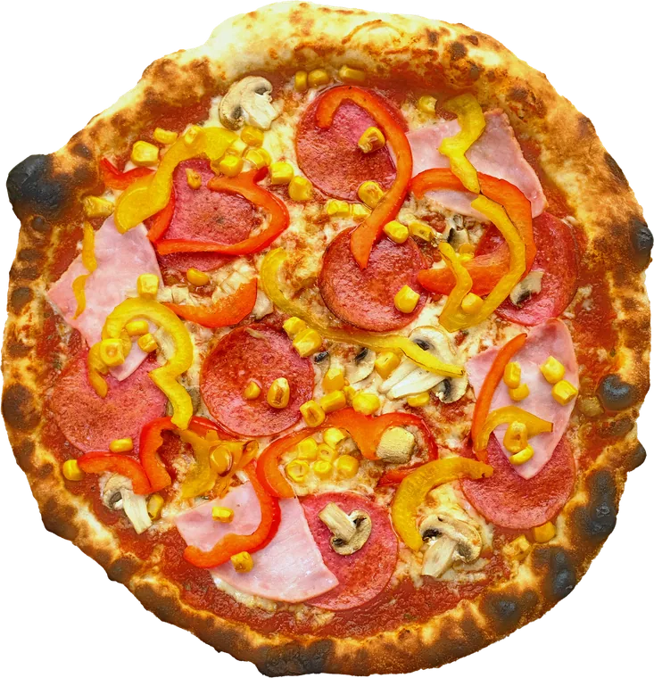
Mozzarella, Salami, Champignons, Hinterschinken, rote Paprika, Mais
13,90 €Mozzarella, Ricotta, Fetakäse, Parmesan, Olivenöl
13,90 €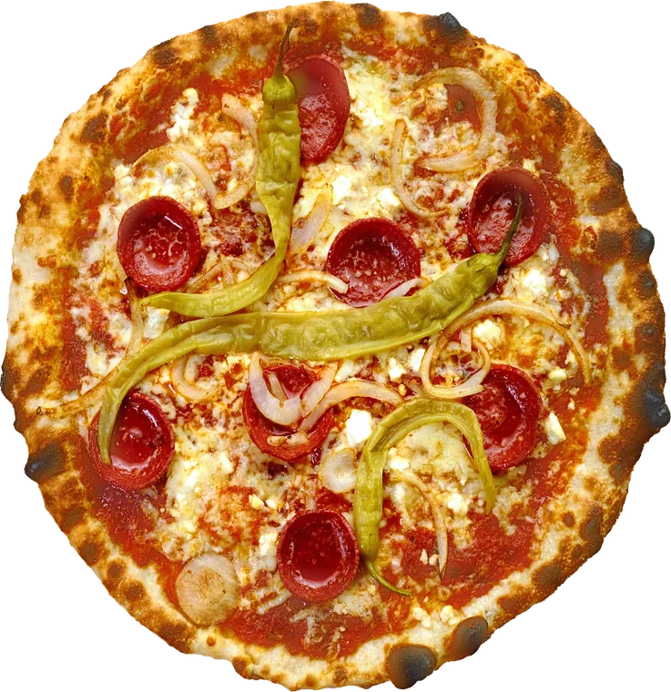
Mozzarella, Fetakäse, Sucuk, weiße Zwiebeln, Peperoni, Knoblauchöl
14,90 €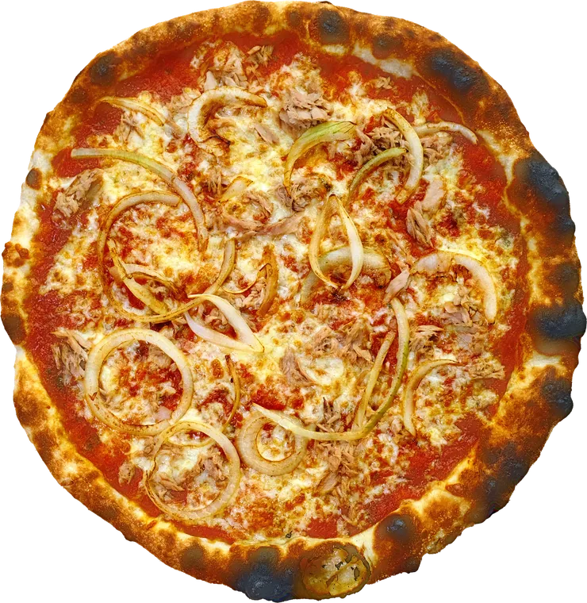
Mozzarella, Thunfisch, weiße Zwiebeln
14,90 €Knoblauch-Pesto, Mozzarella, Salami, Peperoni-Salami, Schinken, Mais, rote Zwiebeln
14,90 €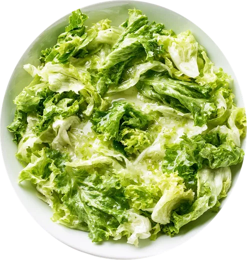
Classic Gartensalat, Hähnchen, Parmesan, Kirschtomaten, Mais
8,90 €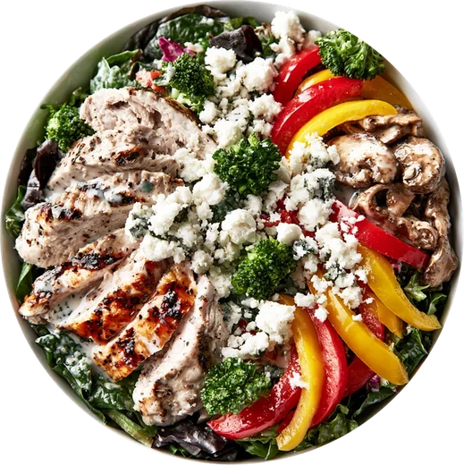
Green Power Basis, gegrilltes Hähnchen, Ziegenkäse, Brokkoli, Paprika, Champignons
9,90 €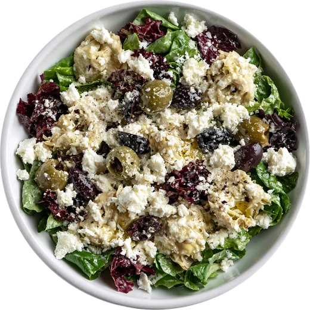
Mediterranean Mix, Fetakäse, Artischocken, grüne und schwarze Oliven
9,90 €Echte Studiofotos der Signature Pizzen und Salate. Die Zuordnung Foto zu Pizza haben wir aus den Belägen abgeleitet, der Kunde bestätigt sie noch.
03 · Baukasten und Ablauf
Der Gast baut seine Pizza selbst und zahlt nach Stufe: 1 Topping 9,90 €, 3 Toppings 11,90 €, 5 Toppings 13,90 €, 7 Toppings 15,90 €. Bestellt wird im Laden am Terminal von onesix (beim Kunden vorhanden), die Menüboards zeigen Karte und Preise.
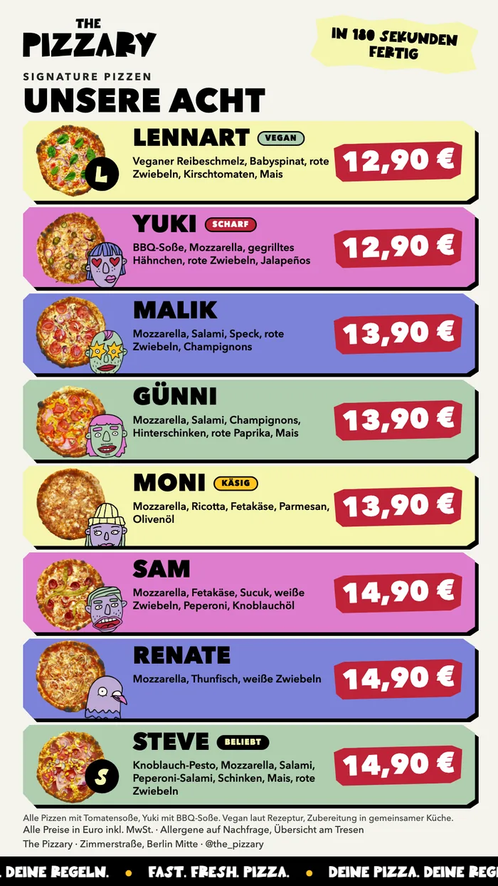
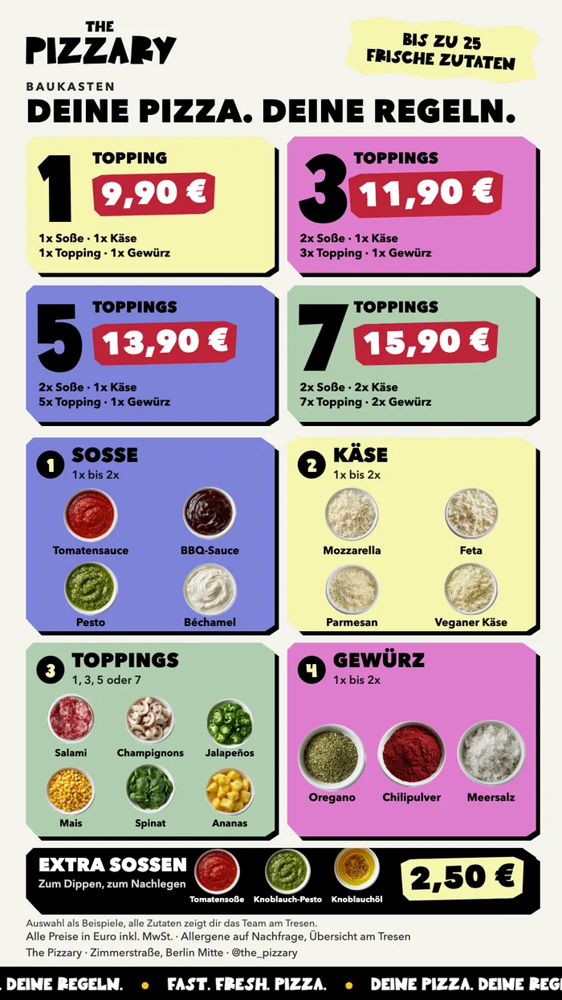
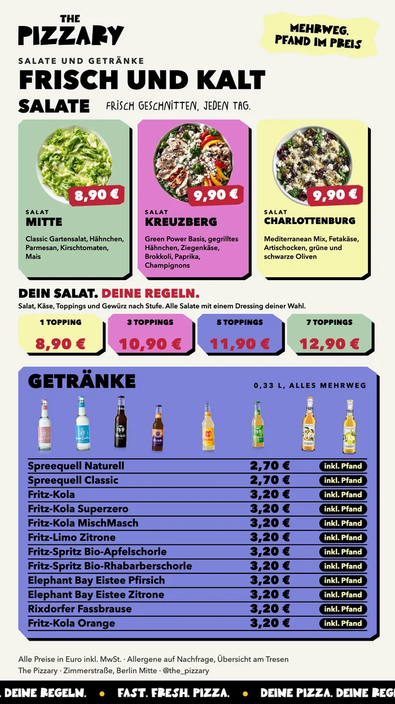
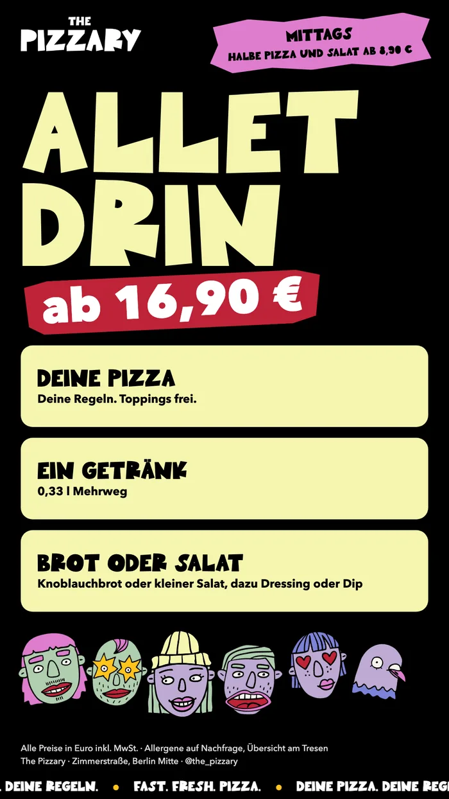
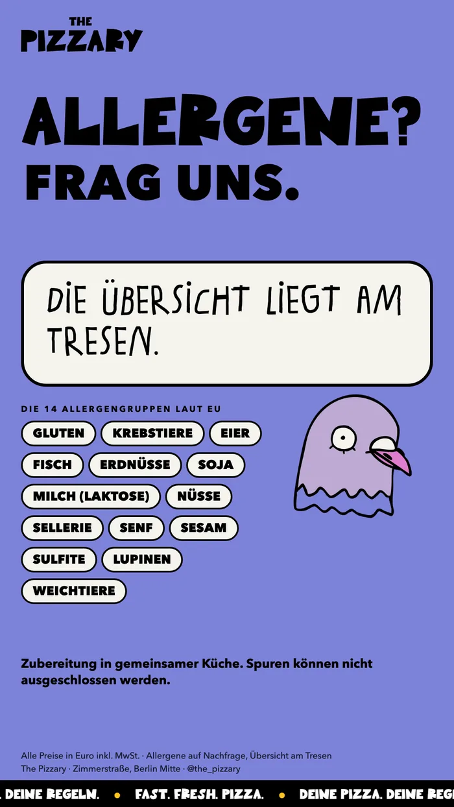
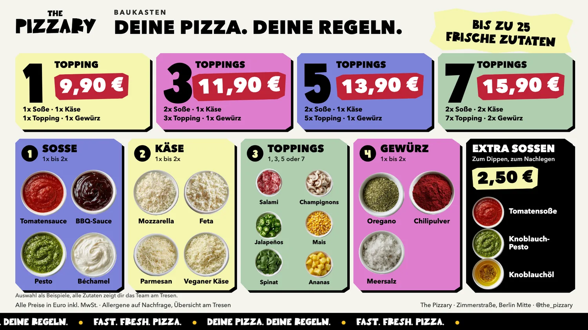
Ablauf laut Steve: Terminal, Bon doppelt, Base, Topping und Finish Artist, Ofen ca. 180 Sekunden, Namensaufruf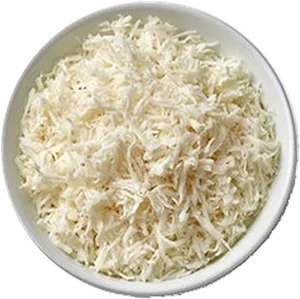
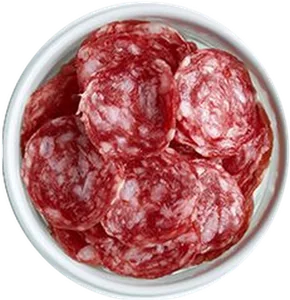
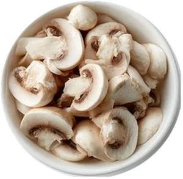
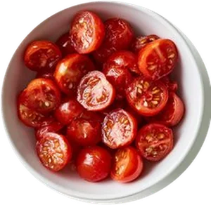
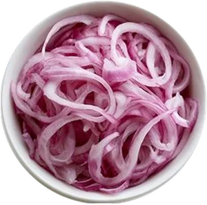
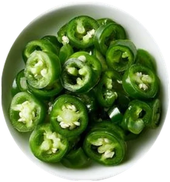
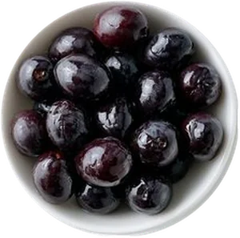
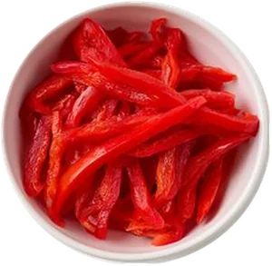
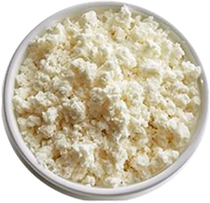
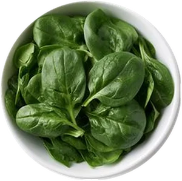
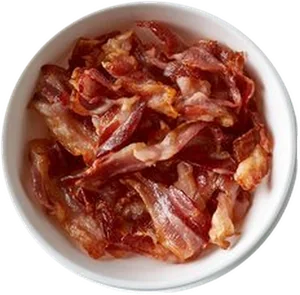
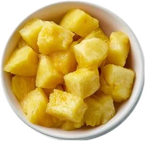
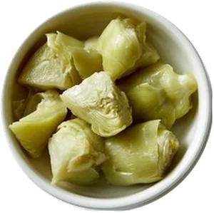
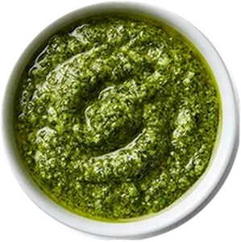
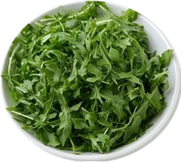
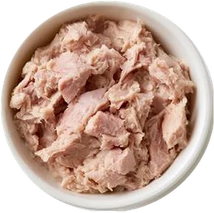
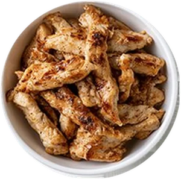
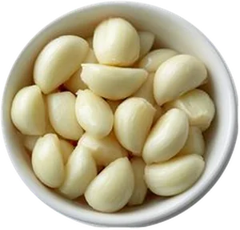
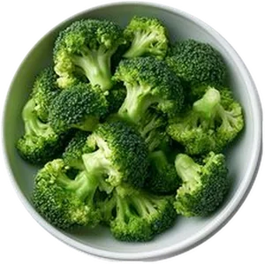
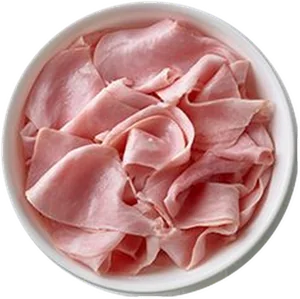
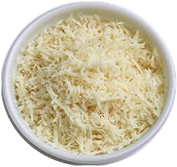
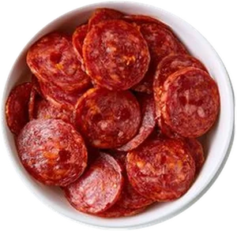
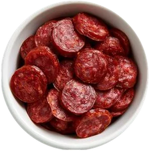
04 · Das steckt im Paket
Jede Karte steht für einen Ordner im Franchise Paket, zusammen decken sie alle 41 Steps ab. Der Stempel zeigt den Stand beim Bauen dieser Seite: liegt vor heißt, es gibt einen Entwurf zum Prüfen. in Arbeit heißt, der Baustein fehlt noch. Alles ist Entwurf, bis Steve freigibt.
Idee, Zielgruppe, Wettbewerb in Berlin Mitte, Positionierung, mit Quellen.
01_Konzept_Steckbrief.mdliegt vorKriterien mit Scoring, Flächenmodell, Technikbedarf, Fragen an Vermieter.
02_Standort.mdliegt vorMarkenhandbuch System, Logo Kit, Regeln für Stadtname und Krafttier, Tonalität, Mockups, Markensicherung mit Rechtekette.
03_Marke_CI/liegt vorOne Six Karte, Zutaten mit Allergenen, Portionen (220 g Teigling, 45 g Käse), Equipment und Pflichtlieferanten. Ohne Teigrezept.
04_Produkt_Rezepte/liegt vorLadenansichten, Grundrisse, Ladenbau Standard und Werbeanlage. Referenz 158 m². Alles Richtwerte, Planer prüft.
05_Store_Visualisierung/liegt vorExcel mit Ist Blatt Zimmerstraße, Szenarien, Sensitivität, Franchise Rechenrahmen, Liste der fehlenden Belege.
06_Businessplan/liegt vorVersion 1.0 zur Freigabe, 96 Seiten, Kapitel F Das Franchise System mit Kriterien der Franchise Reife, dazu Qualitäts Audit. Vertraulich.
07_Franchise_Handbuch/liegt vorEröffnung nach dem Berliner Vorbild, Social Plan, Promotions Jahresplan, Post und Story Vorlagen, Ads.
08_Marketing_Launch/liegt vorWebsite Konzept, Wolt, Uber Eats, Lieferando, Provisionen als Annahme.
09_Website_Bestellwege.mdliegt vorArbeitsliste: Marke, Lebensmittelrecht, Werbung, Datenschutz, Franchisevertrag und Aufklärung. Keine Rechtsberatung.
10_Recht/liegt vorFranchise Paket, Produktvortrag, Mietflächen, Kurzvideo 16:9.
11_Pitch/liegt vorWas Social Bites für das Franchise Paket berechnet, Vorschlag mit Spanne, Rechte, Bedingungen.
12_Angebot/liegt vorAmpel: Was fertig ist und was den Franchise Vertrieb noch blockiert.
13_Verkaufsreife_Check.mdliegt vorNur Konzept Seite. Die Marken Website thepizzary.de läuft beim Kunden und wird nicht neu gebaut.
14_Website/liegt vorFormulare, Ablaufpläne, Mitarbeiterpläne, Aushänge, HACCP Plan als Entwurf.
15_Betrieb/liegt vorSpeisekarte, Flyer, Stempelkarte, Tischaufsteller, Pizzapapier mit den Preisen der One Six Karte.
16_Druck/liegt vorFünf Boards hoch und quer, als Video Schleife und Standbild, Preise der One Six Karte.
17_Menueboard_TV/liegt vorAlle veröffentlichbaren Grafiken auf einer zoombaren Fläche.
18_Gesamtboard/liegt vorEchte Studiofotos, freigestellt, auf Weiß und als WebP, mit Produktliste.
19_Produktbilder/liegt vorOnboarding, Willkommensmappe, Recruiting, Stellenanzeigen, Bewerbungsablauf.
20_Mitarbeiter/liegt vorTeam Kit, Shirts, Cap, Tasche, Schürze mit Druckdateien und Flats. Verpackung: Hexagon Karton, Backpapier, Servietten.
21_Merch_Kleidung/, 18_Verpackung/liegt vorPrototyp gebaut, wird nicht weitergebaut. Im Laden läuft das Terminal von onesix, beim Kunden vorhanden.
22_Kiosk/entfälltDiese Seite, mit öffentlicher Fassung ohne Zahlen.
23_OnePager/liegt vorKurzer Film zum Systempaket, dazu Onboarding Video für neue Mitarbeiter.
23_Videos/liegt vorUnterlagen
Markenhandbuch, Franchise Handbuch, Betrieb, Onboarding, Recruiting, Allergene. Hier jeweils das Deckblatt oder eine Beispielseite, keine Zahlen.
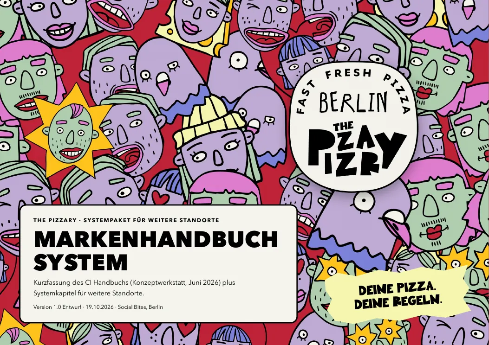
05 · Marketing und Launch
Opening Plan, Social Plan, Promotions, Post und Story Vorlagen mit Platzhaltern für Stadt und Datum. Dazu das Beispiel für Berlin. Die Karten Preise in den Posts sind die echten Preise der Speisekarte.
Vorlagen von Social Bites. Eckige Klammern sind Platzhalter. Gäste Zitate und Gewinnspiel Texte erst mit echten Daten und Teilnahmebedingungen nutzen.
06 · Laden und Auftritt
Der Referenzladen in der Zimmerstraße lebt von Ofen, Theke und Live Produktion. Daraus bauen wir den Auftritt für jeden neuen Ort: Pizzapapier, Fensterfolie, Stempel, Box, Team Kleidung, Aufsteller.
Mockups sind Visualisierungen von Social Bites aus echten Logo und Illustrationsdateien, keine Fotos und nicht für den Druck.
07 · Zahlen und Angebot
Businessplan, Ist Zahlen, Franchise Rechenrahmen und Angebot sind vertraulich und gehen nur nach Absprache mit dem CEO weiter. Wir zeigen sie im persönlichen Gespräch, mit allen Annahmen und dem ehrlichen Stand des Piloten. Franchise Partner kommen erst, wenn der Pilot wirtschaftlich trägt.
Ehrlich dazu
So geht es weiter
Social Bites (Nader Ait-Laouad)